Login and lock screen
The PolyOS 7 design: a big stacked clock, date, Performance: Optimal, news and notifications over the blurred amethyst crystal. Locks instantly with Win+L, and a recovery key resets a forgotten password.
Cryptic Software presents
PolyOS started as an operating system built in Scratch by AndrewInput and the PIXAPoLY team. This project turns it into a real desktop that boots on your PC: the PolyOS look you know, on top of Debian's drivers, Wi-Fi, apps and security.
What's inside
Every screen follows the Scratch original: its colors, shapes and layout were measured from the PolyOS 7 costumes.
The PolyOS 7 design: a big stacked clock, date, Performance: Optimal, news and notifications over the blurred amethyst crystal. Locks instantly with Win+L, and a recovery key resets a forgotten password.
The capsule dock with pinned and running apps, app shortcuts on the wallpaper, a right-click menu, and a taskbar you can float, stretch edge to edge, align left or hide.
Tap the Windows key for the PolyOS Home Menu: calendar, Ask Vara, Run CMD, sliders and your apps. Win+S opens the full-screen app grid with search.
Win+W: weather, calendar, system, news, to-do, notes, photos, world clocks and media controls, in a board you can rearrange.
A file manager for the real disk: places, breadcrumbs, grid and list views, thumbnails, search, copy and paste, and a Trash you can restore from.
Ctrl+Shift+Esc: apps and processes with CPU and memory, End task and Force close, and live performance graphs.
Finds NVIDIA, AMD and Intel graphics, Wi-Fi (Broadcom too), Bluetooth and sound, and installs the right drivers and firmware.
The PolyOS app store: Chrome, Discord, Spotify, Steam, VS Code, LibreOffice, OBS and more, from Debian and Flathub.
Appearance, Taskbar and Desktop, Wi-Fi, Sound, Display, Power and Performance, Account, Privacy and Security, Gaming, Developer and Vara.
Photos and videos from your webcam with a self-timer and mirror, saved to Pictures. It only appears on computers with a camera.
The PolyOS assistant. It opens apps and changes settings right on your PC, and answers everything else with the AI model you choose.
"Cryptic Software presents", the falling pinwheel and the 7, then install on a whole disk, next to Windows, or choose every drive yourself.
Gallery
Real screenshots of PolyOS. Click any of them to see it full size.
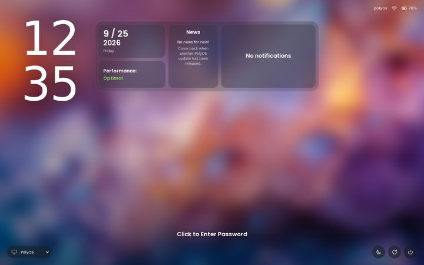
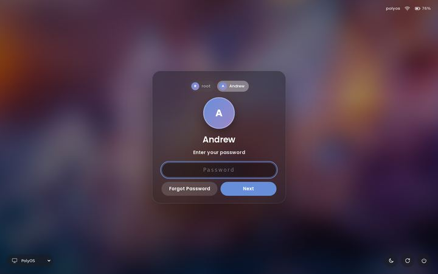
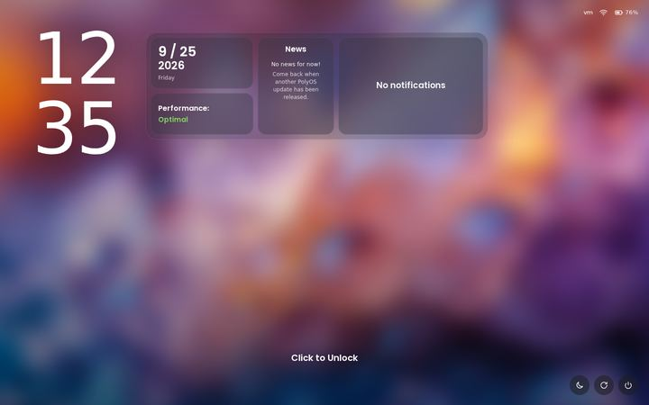
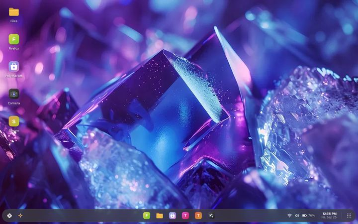
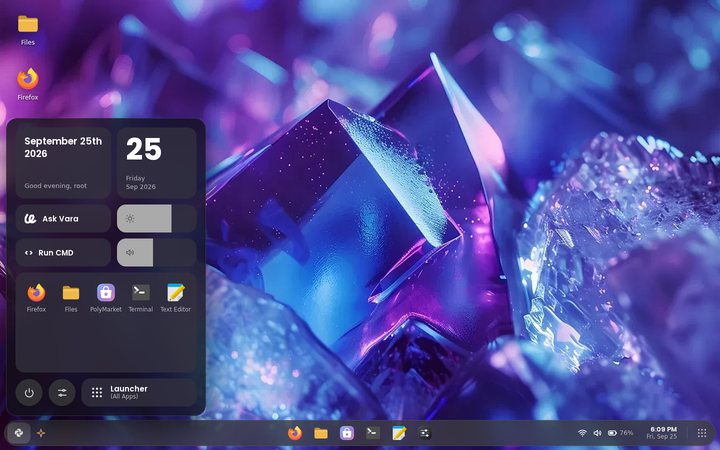
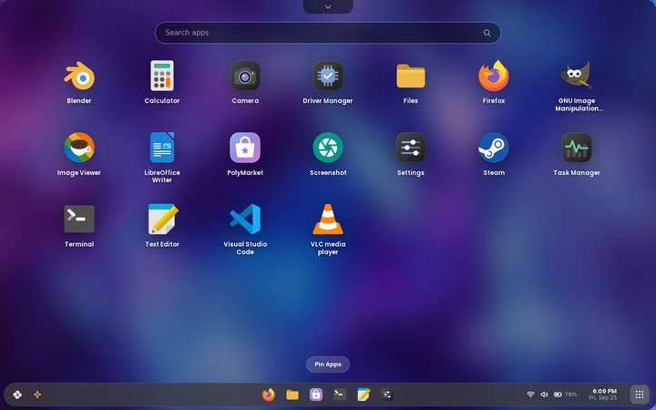
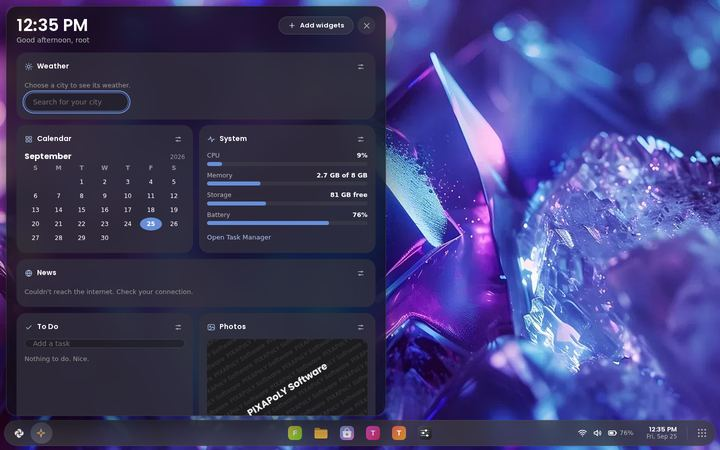
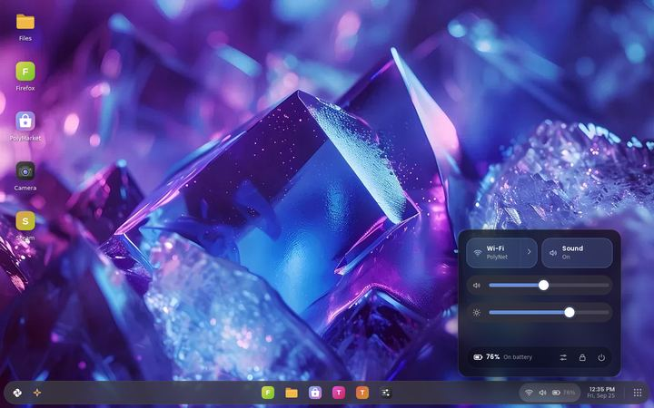
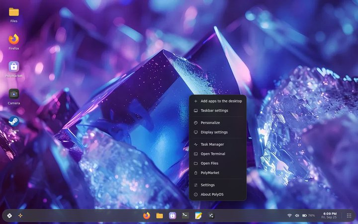
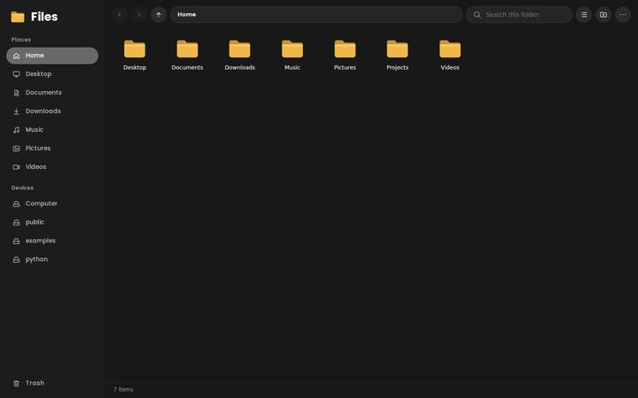
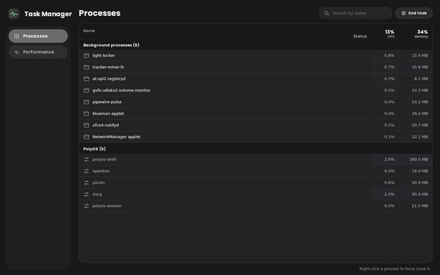
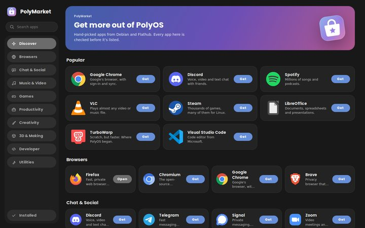
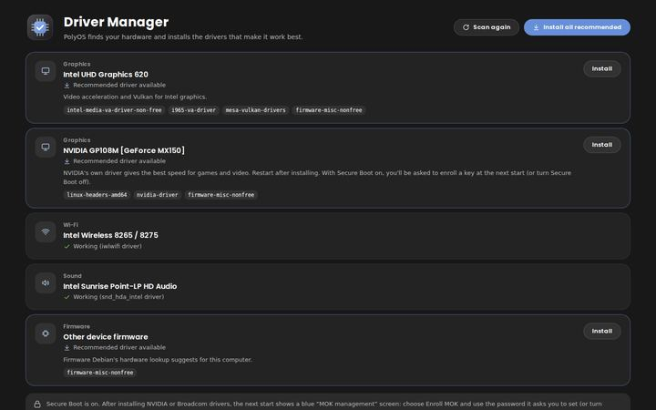
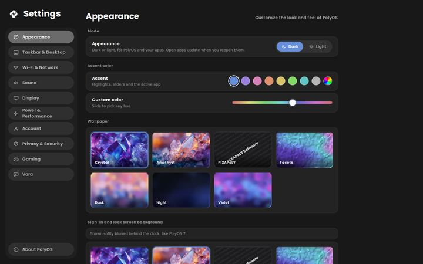
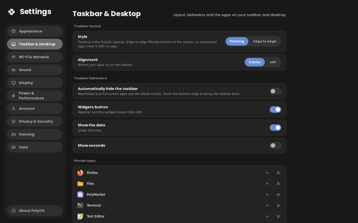
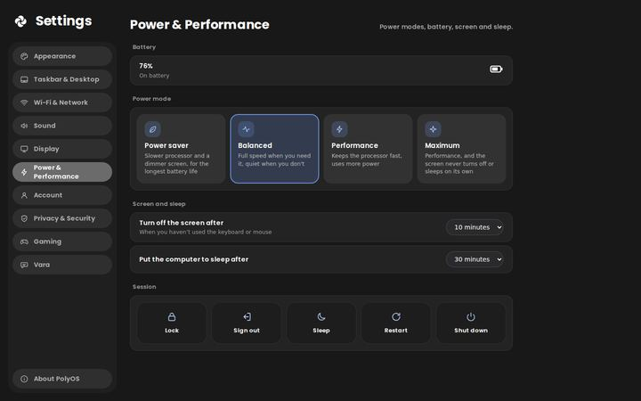
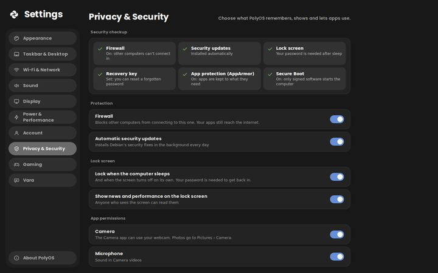
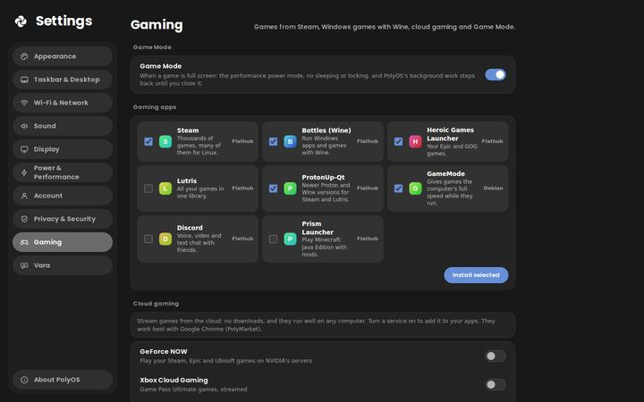
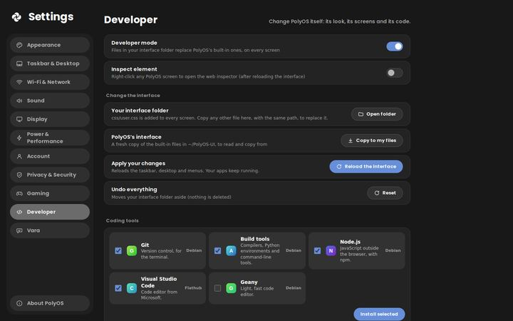
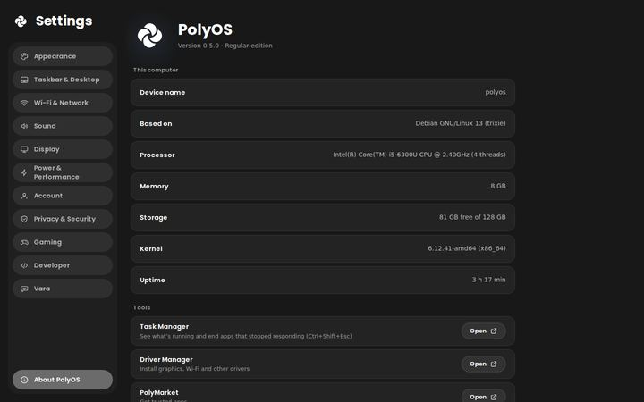
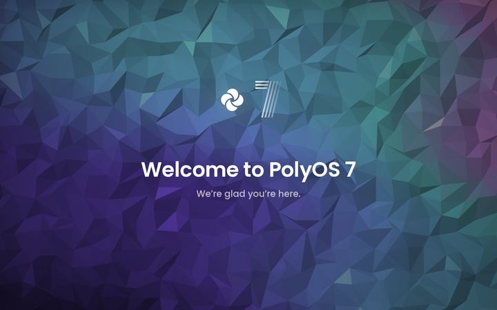
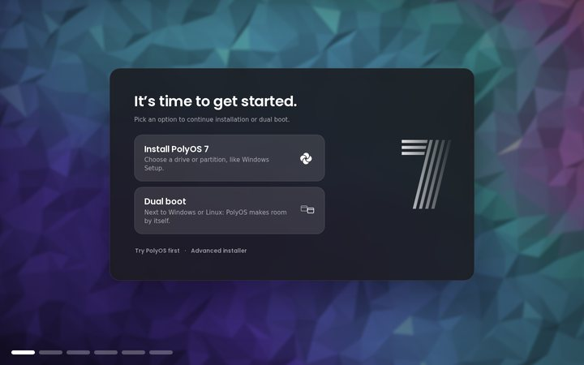
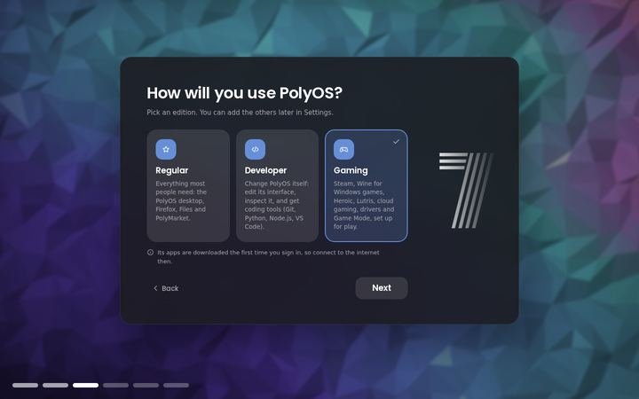
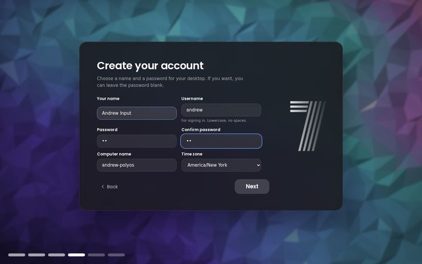
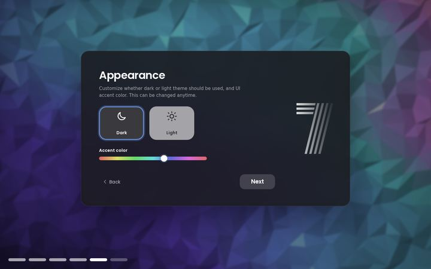
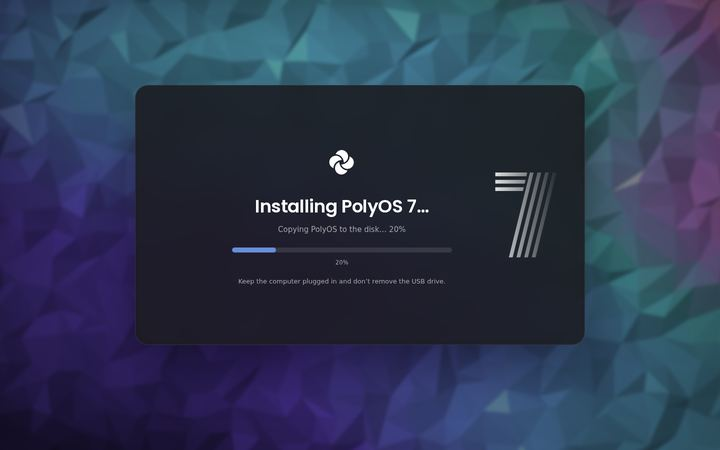
Editions
Pick an edition while installing. Its apps arrive the first time you sign in, and you can add the others any time in Settings.
Everything most people need: the PolyOS desktop, Firefox, Files, Camera, widgets and PolyMarket.
Change PolyOS itself. Any file you put in your interface folder replaces PolyOS's built-in one, on every screen.
user.css restyles everythingpolyos-ctl dev off undoes a broken changeSet up for play: Steam, Windows games with Wine, other launchers, cloud gaming and a Game Mode.
The installer
The PolyOS 7 setup puts PolyOS on your computer three ways:
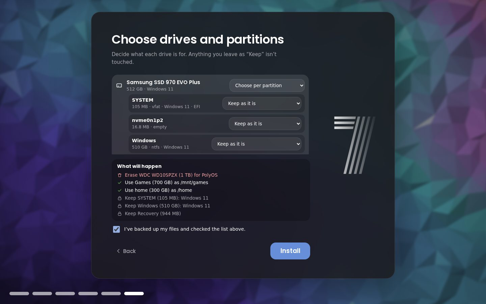
Safe and fast
Other computers can't connect in; your apps still reach the internet.
Debian's security fixes install themselves in the background.
After 5 wrong passwords the lock screen makes you wait, longer each time.
Firewall, updates, lock screen, recovery key, AppArmor and Secure Boot at a glance.
Power saver, Balanced, Performance and Maximum, with screen-off and sleep timers.
Compressed RAM swap, SSD trimming, a faster startup, and full-screen games skip the compositor.
Under the hood
Debian provides the kernel, drivers, Wi-Fi, audio and apps. PolyOS provides everything you see. The interface is plain HTML, CSS and JavaScript, running in WebKitGTK windows that a Python shell places on an Openbox desktop.
Only one small, tested helper ever runs as administrator, and it only installs what the PolyMarket catalog allows.
Try it
The newest release on GitHub. Check it against SHA256SUMS after downloading.
Just want to look around? Anyone with Python can preview the whole interface in a browser:
python main.py dev
Timeline
The desktop shell: capsule dock, Home Menu, full-screen launcher, Files, Settings, Ask Vara, the login screen, the boot splash and a live USB built on GitHub.
The PolyOS 7 setup with the "Cryptic Software presents" intro, Install and Dual boot. Task Manager, Driver Manager, PolyMarket, dark and light mode.
The Windows key opens and closes the Home Menu; the live USB keeps its install card on the desktop.
An instant lock screen, "Forgot password" with a recovery key, the widgets board, and a faster restart after installing.
Login and lock screens redrawn from the Scratch original, the crystal wallpapers, the Camera app, desktop shortcuts, and new Taskbar, Power and Privacy settings.
Regular, Developer and Gaming editions, choosing drives and partitions while installing, firewall and security updates on by default, and speed tuning.
PolyOS was created in Scratch by AndrewInput and the PIXAPoLY Software team (scratch.mit.edu/users/PolyOS). This edition is presented by Cryptic Software, with the team's blessing.
PolyOS for Debian is free software under the GNU GPL v3 or later. The PolyOS logo, colors and PIXAPoLY artwork come from the Scratch project (CC BY-SA 2.0). The Crystal and Amethyst wallpapers in the screenshots are third-party photos used by PolyOS 7. The Poppins font is under the SIL Open Font License. "Scratch" is a trademark of the Scratch Foundation; PolyOS isn't affiliated with or sponsored by the Scratch Foundation or Debian.